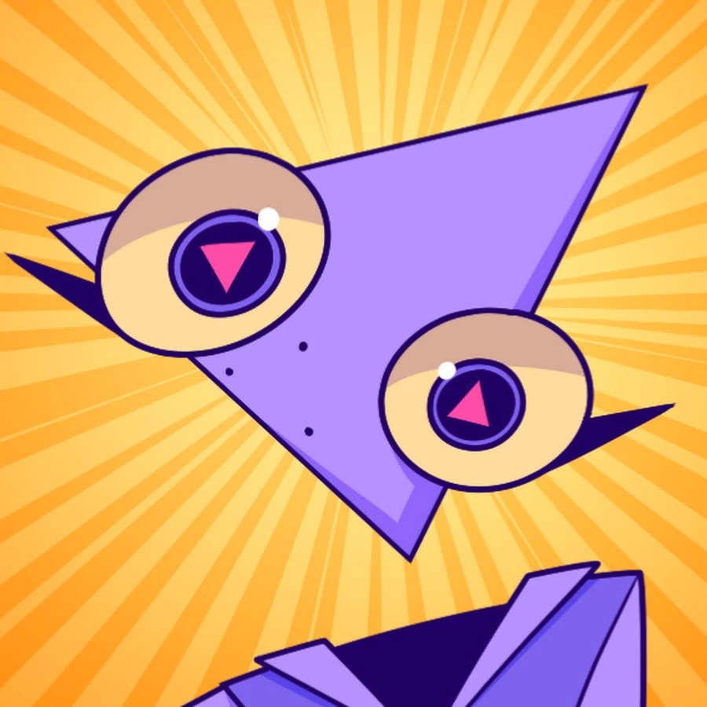
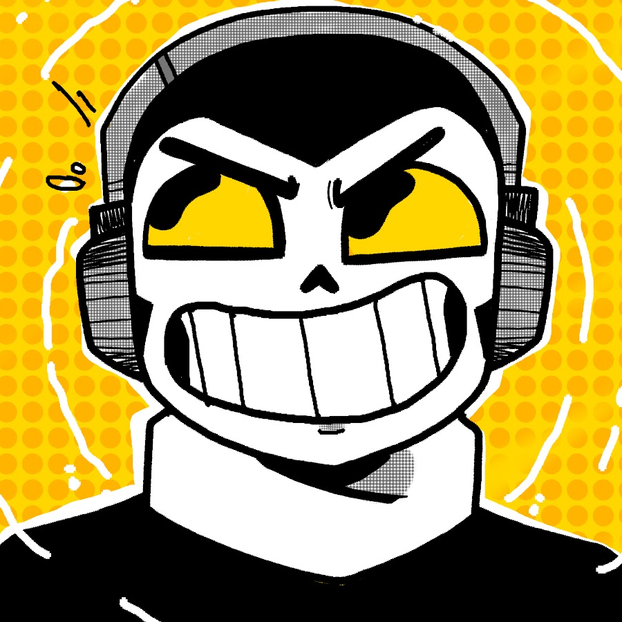

Gooseworx
Gooseworx, alias de Cooper Smith Goodwin, es una artista visual y musical estadounidense, dedicada principalmente a la ilustración, animación y composición. Es la creadora de la serie web The Amazing Digital Circus.

El Ultimo Circulo
Originario de Monterrey, la trayectoria digital de Felipe comenzó en 2015 en el ámbito de las artes visuales. Bajo el seudónimo "fo8m", gestionó durante cinco años una cuenta de Instagram dedicada a la ilustración, etapa en la que desarrolló la sensibilidad estética que define su producción actual.

SrPelo
David Axel Cazares Casanova (Coatzacoalcos, Veracruz, 23 de octubre de 1992), más conocido como Sr Pelo, es un YouTuber, animador, satírico y actor de doblaje mexicano conocido por crear la serie animada Spooky Month, sus vídeos de parodias en Newgrounds y YouTube, y por su participación en Newgrounds.